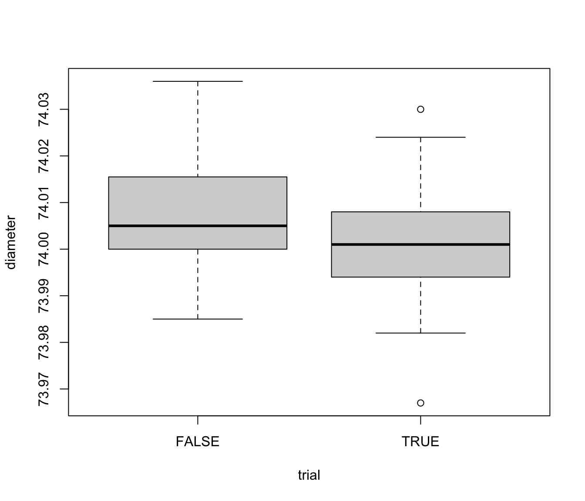

Piston rings data
Piston rings for an automotive engine are produced by a forging process. The inside diameter of the rings manufactured by the process is measured on 25 samples, each of size 5, for the control phase I, when preliminary samples from a process being considered 'in control' are used to construct control charts. Then, further 15 samples, again each of size 5, are obtained for phase II.
data(pistonrings)
Format
A data frame with 200 observations on the following 3 variables.
- diameter
a numeric vector
- sample
sample ID
- trial
preliminary sample indicator (TRUE/FALSE)
References
Montgomery, D.C. (1991) Introduction to Statistical Quality Control, 2nd ed, New York, John Wiley & Sons, pp. 206--213
Examples
#> ── pistonrings$trial = FALSE ──────────────────────────────────────────────────────── #> #> Obs Mean Std.Dev. Min Q1 Median Q3 Max #> diameter 75 74.01 0.01241 73.98 74 74 74.02 74.04 #> sample 75 33.00 4.34959 26.00 29 33 37.00 40.00 #> #> ── pistonrings$trial = TRUE ───────────────────────────────────────────────────────── #> #> Obs Mean Std.Dev. Min Q1 Median Q3 Max #> diameter 125 74 0.01007 73.97 73.99 74 74.01 74.03 #> sample 125 13 7.24012 1.00 7.00 13 19.00 25.00boxplot(diameter ~ trial, data = pistonrings)plot(diameter ~ sample, data = pistonrings, cex=0.7)with(pistonrings, lines(tapply(diameter,sample,mean)))